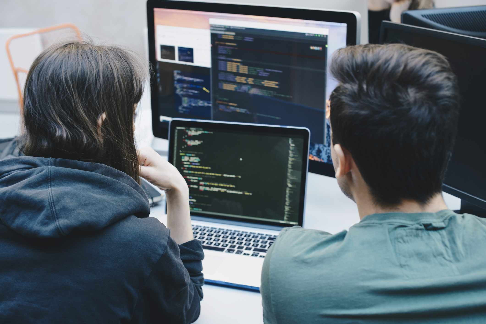
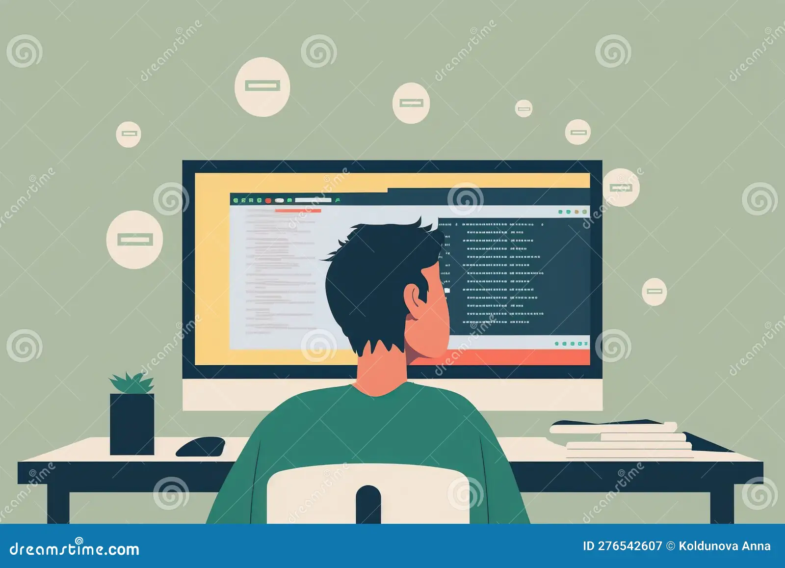

JURUSAN TEKNIK KOMPUTER

Jika kamu memilih jurusan ini, hal utama yang akan dipelajari nantinya adalah cara untuk mengimplementasikan software atau perangkat lunak pada perangkat keras. Materi mengenai perangkat lunak sendiri kira-kira sekitar 45%, lebih sedikit daripada materi perangkat keras yang porsi belajarnya mencapai 55%. Dari sini, dapat dilihat bahwa jurusan teknik komputer ini fokusnya lebih terpusat pada pengembangan perangkat keras dalam perangkat komputasi.
Jurusan Teknik Informatika

Berikutnya, teknik informatika masuk dalam daftar jurusan programmer yang akan memberi materi mengenai pengetahuan dan keterampilan secara luas yang mana juga mencakup sistem informasi, jaringan komputer dan software engineering. Ilmu dasar matematika dan fisika juga tidak luput untuk dipelajari oleh mahasiswa jurusan teknik informatika.